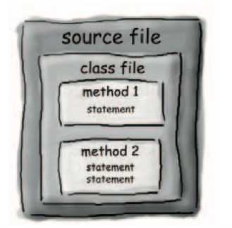

Chapter 1 Dive in A Quick Dip¶
Java has friendly syntax, object-oriented features, memory management, and best of all - the promise of probability ( write-one/run-anywhere ).
You type a source code file(.java). compile it using the javac compiler, then run(java) the compiled bytecode(.class) on a java virtual machine.

main method¶
Every Java application has to have at least one class, and at least one main method.
The main method is where your program starts running.
public static void main(String[] args){ //your code goes here }
Looping¶
Java has three standard looping constructs: while, do-while, and for.
while ( ) { }
A boolean and an integer are not compatible types in Java.
int x=1;
while (x) {} //wrong
Conditional branching¶
if (conditional test) { } else { }
Note
System.out.println inserts a newline, System.out.print keeps printing to the same line.
Strongly-typed language¶
Java is a strongly typed language(强类型语言) and that means I can't allow variables to hold data of the wrong type.
Dynamic Binding¶
However, There are some datatype exceptions that can emerge at runtime, but some of those have to be allowed to support one of Java's other important features -- dynamic binding(动态绑定).
Here are a few important differences between static and dynamic binding in Java [ref]:
- Static binding in Java occurs during compile time while dynamic binding occurs during runtime.
private,finalandstaticmethods and variables use static binding and are bonded by compiler while virtual methods are bonded during runtime based upon runtime object.- Static binding uses Type (class in Java) information for binding while dynamic binding uses object to resolve binding.
- Overloaded methods are bonded using static binding while overridden methods are bonded using dynamic binding at runtime.
Static Binding Example in Java:
public class StaticBindingTest { public static void main(String args[]) { Collection c = new HashSet(); StaticBindingTest et = new StaticBindingTest(); et.sort(c); } //overloaded method takes Collection argument public Collection sort(Collection c) { System.out.println("Inside Collection sort method"); return c; } //another overloaded method which takes HashSet argument which is sub class public Collection sort(HashSet hs) { System.out.println("Inside HashSet sort method"); return hs; } }
Example of Dynamic Binding in Java:
public class DynamicBindingTest { public static void main(String args[]) { Vehicle vehicle = new Car(); //here Type is vehicle but object will be Car vehicle.start(); //Car's start called because start() is overridden method } } class Vehicle { public void start() { System.out.println("Inside start method of Vehicle"); } } class Car extends Vehicle { @Override public void start() { System.out.println("Inside start method of Car"); } }